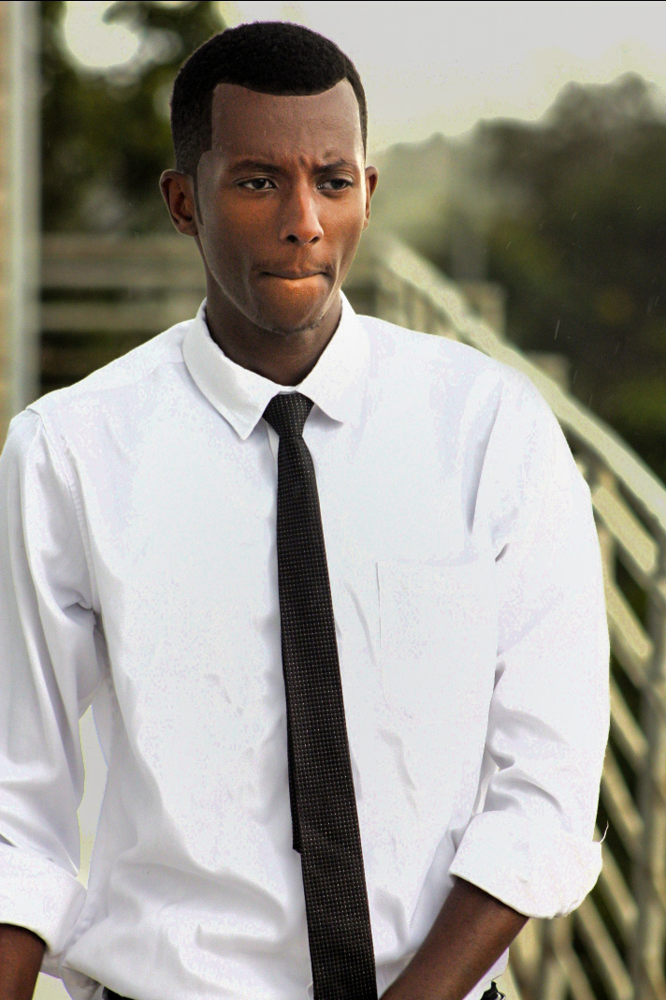
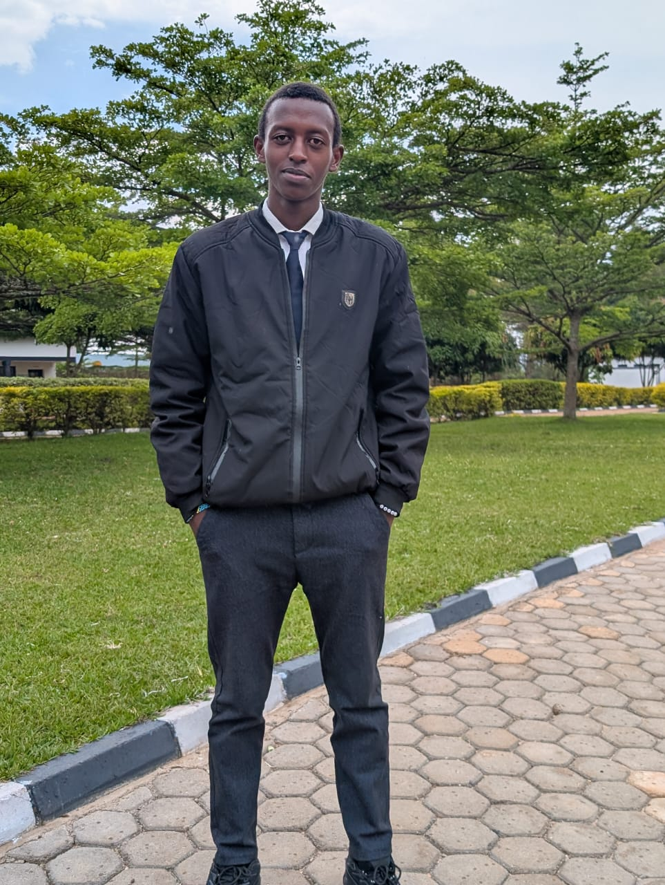
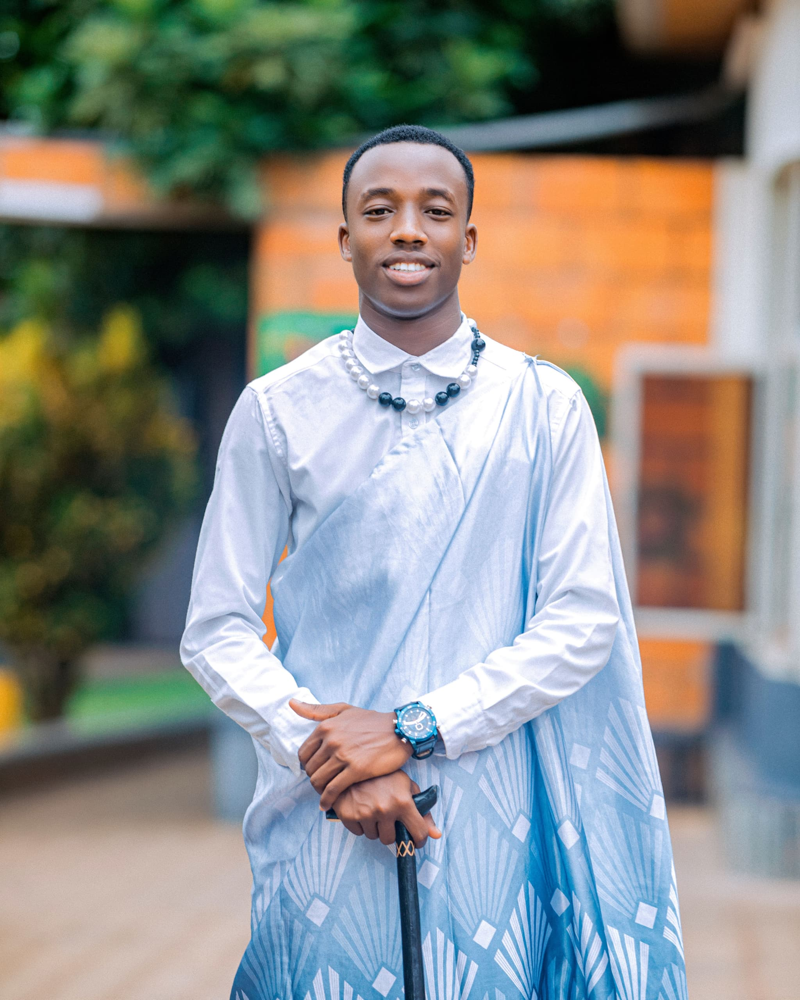

Kaitale Hadadi
Founder
“True leadership is earned through respect, sustained by teamwork, guided by knowledge, and measured by the legacy it leaves behind.”

COMPANY EXECUTIVES

Founder
“True leadership is earned through respect, sustained by teamwork, guided by knowledge, and measured by the legacy it leaves behind.”

Co Founder
“Greatness is never achieved alone; it grows where people honor each other, share strengths, and commit to a vision larger than themselves.”

Executive Director
"empowerment of young people is to innovate, collaborate, and make a lasting impact, while promoting inclusivity, diversity, and social responsibility."

Blue Sky Youth Leadership Program (BS Leadership) is a community-driven initiative founded in Kigali, Rwanda, in July 2024 by two people; Kaitale Hadadi and Mulumba Sadam Kaitale with a mission to empower young leaders to create positive change in their communities. We believe that true leadership begins with knowledge, service, and collaboration.
Through a blend of workshops, mentorship, debates, project-based learning, and community engagement, we equip young people with the skills, networks, and confidence they need to become impactful leaders and change-makers.
We proudly collaborate and partner with schools, community organizations, and local leaders in Kigali and beyond to provide opportunities for youth to grow and thrive. Our partnerships ensure that participants not only gain knowledge but also put it into action through volunteer work, community projects, and meaningful connections with mentors and peers.
Building communication, teamwork, problem-solving, and decision-making skills.
Encouraging youth to give back through volunteer work and impactful projects.
Connecting participants with experienced mentors, alumni, and professionals.
Working hand in hand with schools, educators, and community members to create lasting impact.
BS Leadership was founded in Kigali by Kaitale Hadadi and Mulumba Sadam Kaitale with a vision to create spaces where youth can discover and act on their leadership potential.
We invested in empowering debaters at GS APRED Ndera, sharpening communication, critical thinking, and confidence through structured debates and mentorship.
We ran sensitization campaigns in the Ndera community focused on environmental conservation, inspiring collective responsibility for a sustainable future.
Your contribution helps us empower young leaders.
Workshops, debates & mentorship programs that build confidence.
Leadership sessions at GS APRED Ndera and more schools.
Environmental and awareness campaigns for stronger communities.
Resources for underrepresented youth to thrive.